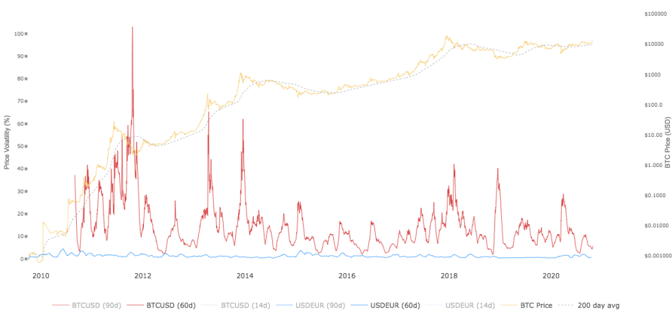

Contents
- What is Bitcoin?
- Does Bitcoin unnecessarily waste too much energy?
- Does the Bitcoin price go up and down too much?
- Is Bitcoin better than normal money?
- Can a deflationary economy work?
- Why does Bitcoin have value?
- Who needs Bitcoin?
- Can Bitcoin be used for money laundering?
- Who writes the code for Bitcoin?
- How does Bitcoin work?
- Could a state attack Bitcoin?
- Is it too late to buy Bitcoin?
- Where can I spend Bitcoin?
What is Bitcoin?
Bitcoin is the most secure financial ledger in the world. It is disinflationary money and digital cash. Disinflationary means that Bitcoins inflation is reduced by 50% every 4 years until it gets close to 0. There will only ever be 21 million coins. It can be used to transfer billions in value worldwide or for millions of micro transactions per second on the lightning network for in-game payments or the internet of things. It is also programmable money.
Bitcoin is decentralized. Everybody can have a copy of the "bitcoin server" (Bitcoin full-node) with all the transactions ever made. There is no "Bitcoin company" and you don't need to sign up anywhere. All you need is a Bitcoin wallet. There are paper wallets, software wallets and hardware wallets. These wallets contain the keys to the Bitcoins.
Bitcoins are not stored on your computer or phone, they are stored on the decentralized Bitcoin computer network (Blockchain) and can be accessed with a password (also called private key).
Bitcoin is permissionless. This means that you can use Bitcoin to accept payments for your business without signing up anywhere or doing any paperwork. Just post your Bitcoin address or qr code on your website or use an open source payment provider like BTCPayserver.
Does Bitcoin unnecessarily waste too much energy?
Many pepole think that Bitcoin unnecessarily wastes energy because of an arbitrary algorithm that could simply be changed to a different energy saving algorithm. Bitcoin mining is not arbitrary. Mining is what makes Bitcoin the most secure computer network in the world. It takes energy, an expensive resource from the real world, and uses it in a security mechanism in the digital world to solve the double-spending problem.
The double-spending problem shortly explained: In the digital world, you can send the same file or email as often as you want. A digital money system only works if the same coin can't be sent multiple times. Otherwise everybody in the system could just send the same 1000$ to different merchants and effectively have infinite money. The great innovation in Bitcoin is that it solved this problem of digital scarcity with proof of work mining.
The world's hydro, biofuel, solar and wind energy combined could power the Bitcoin network 98 times. The amount of electricity consumed every year in always-on but inactive home devices in the USA alone could power the Bitcoin network for 3.5 years. See these comparisons and others here: cbeci.org/cbeci/comparisons
Some people fear that Bitcoin can worsen climate change. Since it only uses a small fraction of the global energy produced, these fears are of course blown out of proportion. Bitcoin could actually be part of the solution to climate change. Thanks to Bitcoin, energy companies now have a way to monetize excess energy and renewable energy that is too remote to use for civilization. Energy companies that mine Bitcoin will be incentivized to increase renewable energy conversion efficiency in a race to be the most profitable Bitcoin miner.
This blog article from the International Energy Agency explains Bitcoins energy consumption: IEA Bitcoin energy consumption
As you can see, there is no reason to be afraid of Bitcoins energy consumption.
Does the Bitcoin price go up and down too much? (Is it too volatile?)
The above image shows the history of the Bitcoin price until 10. August 2019. Bitcoin goes up and down like nothing else. The news frequently writes that Bitcoin has crashed or that it is dead. People therefore repeatedly dismiss Bitcoin as a failed or dead project. The above price history shows that despite the regular 85% crashes Bitcoin has had a positive price discovery since 2010.
Is Bitcoin better than normal money?
There will only ever be 21 million Bitcoin. "Normal money" like US Dollars or Euros dont have a fixed supply and can be created by the government and by private banks for their personal advantage. This gives them too much power and inflates the money supply. The rising money supply causes the money to loose value every year. This is called inflation and causes the price of goods and services to go up because the money is worth less. Bitcoin on the other hand can not be inflated by governments or private banks. In Bitcoin, the same rules apply for everybody.
The following video is the best explanation I could find on how the process of money creation works:
Can a deflationary economy work?
In a world where Bitcoin is the dominant money, the prices of goods and services would go down because the value of Bitcoin goes up over time thanks to the law of demand and supply. When more people want a piece of the limited supply of 21 million coins, the price increases. Even after mass adoption, when almost everybody in the world uses Bitcoin, the value would still go up over time. Growing populations and economies would cause a steady increase in demand.
Many economists believe that an economy can't work with deflation because people and companies wont spend nor invest because they would rather keep the Bitcoin and watch it increase in value. This would slow economic growth and increase unemployment.
This is a world view that doesn't hold up to scrutiny. People will always have wants and needs and companies will always want to innovate. Some forms of spending would be disincentivized in a Bitcoin economy which could be a good thing. A debt-fueled economy like we have today, with easy money, produces a lot of bullshit since people don't need to put a lot of effort into fundraising. In a Bitcoin world there wont be much easy money floating around funding bullshit. A Bitcoin world could incentivize thoughtful spending which could lead to a more sustainable long-term way of thinking in everyday life and business.
Another aspect to consider is that humanity, motivated by never ending economic growth, has exploited the worlds resources and emitted carbon dioxide to a point where ecological disasters are likely to increase. It would be prudent to study and experiment with ways to run societies with less or negative economic growth. This school of thought is called the degrowth or post-growth movement.
Why does Bitcoin have value?
Modern technologies usually capture value by disrupting old technologies.
These are old technologies or industries that Bitcoin is disrupting:
GOLD (Bitcoin is rarer and more practical than gold)
MONEY (Bitcoin is sound money with a fixed inflation schedule that goes towards 0)
SAVINGS ACCOUNTS (negative interest rates vs appreciating asset)
STOCKS (other digital assets can be created on Bitcoin side chains like the Liquid network)
REMITTANCES (send Bitcoin to anyone in the world for a few cents vs 10% Western Union fees)
BLACK MARKETS (people will prefer to buy their stuff online from vendors with positive reviews vs. the scary guy on the street)
TAX HAVENS (Swiss bank account in your pocket)
These are all trillion dollar markets. The more Bitcoin eats into these industries, more valuable it becomes.
Who needs Bitcoin?
People in the western world have a hard time understanding why we need Bitcoin. Bitcoin is most necessary in countries without stable currencies, or with authoritarian restrictive regimes, where Bitcoin is used to protect wealth from inflation or confiscation.
Notable examples of individuals in the western world who needed Bitcoin are whistle blower Edward Snowden and Wikileaks founder Julian Assange. Edward Snowden used Bitcoin to pay for the server on which he uploaded the leaks and Julian Assange had to accept Bitcoin for donations, when Wikileaks was cut off from all payment providers.
Looking at the depreciation of fiat currencies over time, one should conclude that everybody needs Bitcoin to protect their wealth against inflation.
Can Bitcoin be used for money laundering?
Money laundering is the practice of lying about where money that was earned from illicit activities comes from. Assume criminals want to spend 5 million dollars that they made by selling cocaine. When they buy houses, cars and other nice things with that money, they have to pay taxes and explain to the state where the money came from.
This works by operating legitimate businesses like restaurants, car washes, sports betting shops etc. and pretending that the money came from there. The drug money gets included in those businesses profits and then its clean.
If you are smart, and I believe you are, you should already understand that Bitcoin is not very helpful here. If they sell drugs for Bitcoin and later want to spend it they still have to explain to authorities where those Bitcoin came from. Aside from this, every Bitcoin transaction is public to everyone and saved for eternity https://mempool.space.
Not so good for money launderers.
Who writes the code for Bitcoin?
The first Bitcoin (BTC) was mined on January 3, 2009, by someone known as “Satoshi Nakamoto.” Now, Satoshi Nakamoto is recognized as the pseudonym of the person or group of people who created Bitcoin — the invisible figure or figures whose technological creation has influenced the world. Who had created the bitcoins code?
Here is a historical repository of Satoshi Nakamoto's original bitcoin sourcecode Bitcoin Github contributors
How does Bitcoin work?
Bitcoin is a decentralized peer-to-peer computer network, in which every participant has a copy of all transactions ever made. As a result, the network is able to automatically recognise fraudulent transactions and reject them.
Bitcoins are created in a process called mining, which also makes Bitcoin so secure. Bitcoin miners have to find a certain number that requires a lot of computing power to find. Once they have found this number, they get Bitcoins as a reward and are allowed to add the next block to the blockchain, in other words, to add the next batch of transactions to the ledger. If they try to cheat by creating fake Bitcoin for themselves, their block gets rejected and the reward goes to an honest miner.
This is the best video I have found on how the Bitcoin blockchain and mining works. It slowly explains the most important parts (blocks, nonces, hashes) and how they work together in making Bitcoin secure.
Could a state attack Bitcoin?
A State can not buy enough hardware for a 51% attack. The number of manufacturers is well known and there is a shortage of miners. All manufacturing facilities are running at full capacity producing chips for graphics cards, AI and supercomputers. Since the existing installed number of miners is many times larger than the annual production of new miners, a nation state would need to buy all the supply of hardware manufacturers worldwide for many years, just to be able to reach 51%. This makes entering the market secretly impossible.
Only theoretically can a state manufacture enough miners for a 51% attack. It has to spend billions for the facilities, billions for the production and hundreds of millions for the energy and would not achieve much. With a 51% attack you do not control Bitcoin. The only thing you can do is make fake transactions and block transactions for a short period of time. Both attacks are identifiable and can be remedied by the Bitcoin ecosystem.
The state can get mining rewards about half the time but these Bitcoins would be identifiable and can be rejected by the Bitcoin community. Hence, the state can not profit from mining and would be competing with profitable miners.
After a short period of time, the Bitcoin ecosystem would decide to fork off the attacking state miners and cause a chain split (bifurcation of the bitcoin network into two):
1. original-bitcoin-chain. 2. state-attack-chain.
After this bifurcation the attacking state miners will be mining on the state-attack-chain and not affect the original-bitcoin-chain anymore.
The result of this failed nation state attack would increase the confidence in Bitcoin and send Bitcoin prices soaring.
In this video Andreas Antonopoulos answers questions on different ways to attack Bitcoin:
Is it too late to buy Bitcoin?
This is not financial advice! Models are not accurate predictions of the future.In the Bitcoin stock-to-flow model developed by PlanB, the Bitcoin price reaches a price of 105,000$ by 2021 and 1,300,000$ by 2025. Stock-to-flow models accurately calculate the value of Gold and other precious metals. According to this model you are still not too late if you want to profit from Bitcoins price appreciation. If Bitcoin only catches up with Golds 8 trillion dollar marketcap, one Bitcoin would be worth around 300,000$.
Where can I spend Bitcoin?
It may not be a good idea to spend too much Bitcoin since we are still in the early stages of adoption (less then 1% of the world population owns Bitcoin) but it may be fun to do so now and then.